Instructions
- Click on the button "Select plant whose gene is to be edited" to display plant.
- Click on the button "Select a gene to be edited" .
- Click on the button "Retrieve sequence information of gene from NCBI".
- Click on the button "Order/synthesize CRISPR plasmid with codon optimised Cas9 gene".
- Click on the button "Use softwares like CRISPR-P v2.0 or Cas Offinder to find the optimum Cas9 binding guide RNA locations within the gene".
- Click on the button "Synthesize the red highlighted parts of the DNA as guide RNA".
- Click on the button "Ligate the synthesized guide RNAs into the CRISPR plasmid".
- Click on the button "Transform plant with guide RNA ligated CRISPR plasmid via electroporation or gene gun and regenerate plant".
- Click on the button "Isolate genomic DNA from both wildtype plant and transformed plant".
- CLick on the button "PCR using gene specific primers from both wildtype plant gDNA and transformed plant gDNA".
- Click on the button "Purify the PCR products and analyse them via Sanger DNA Sequencing"
- Click on the button "Compare the sanger sequencing results of both PCR products"
- Click on the button "If gene edited, identify traits/phenotype due to that non-functional gene"
| Step 1 | |
| Step 2 | |
| Step 3 | |
| Step 4 | |
| Step 5 | |
| Step 6 | |
| Step 7 | |
| Step 8 | |
| Step 9 | |
| Step 10 | |
| Step 11 | |
| Step 12 | |
| Step 13 |
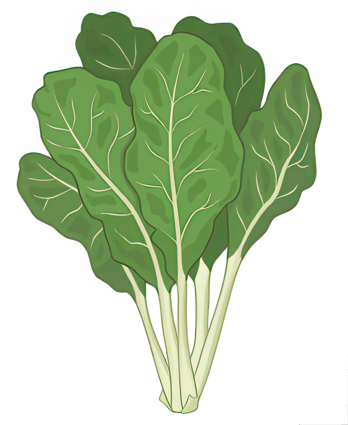
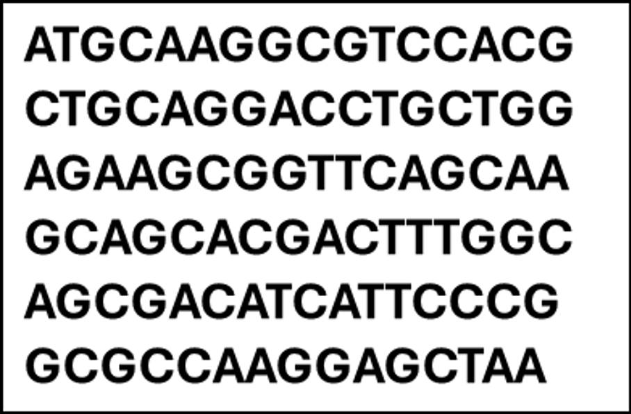
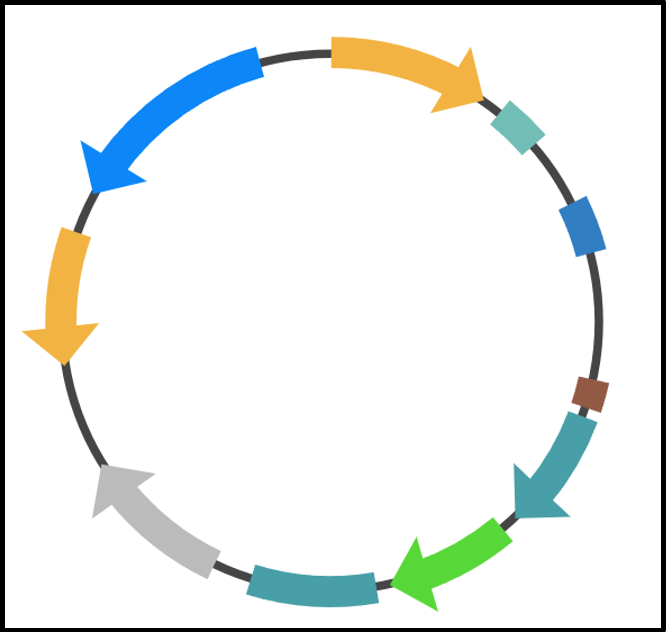
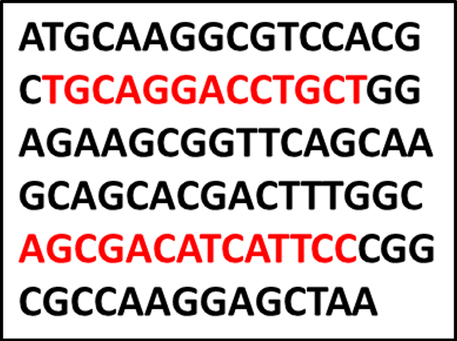
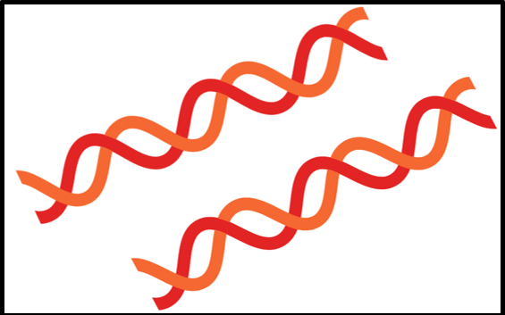
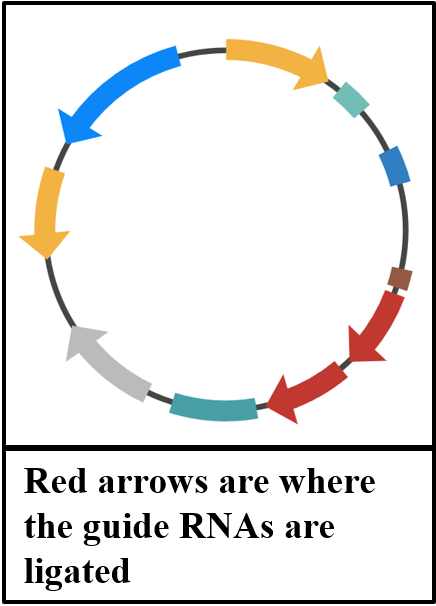
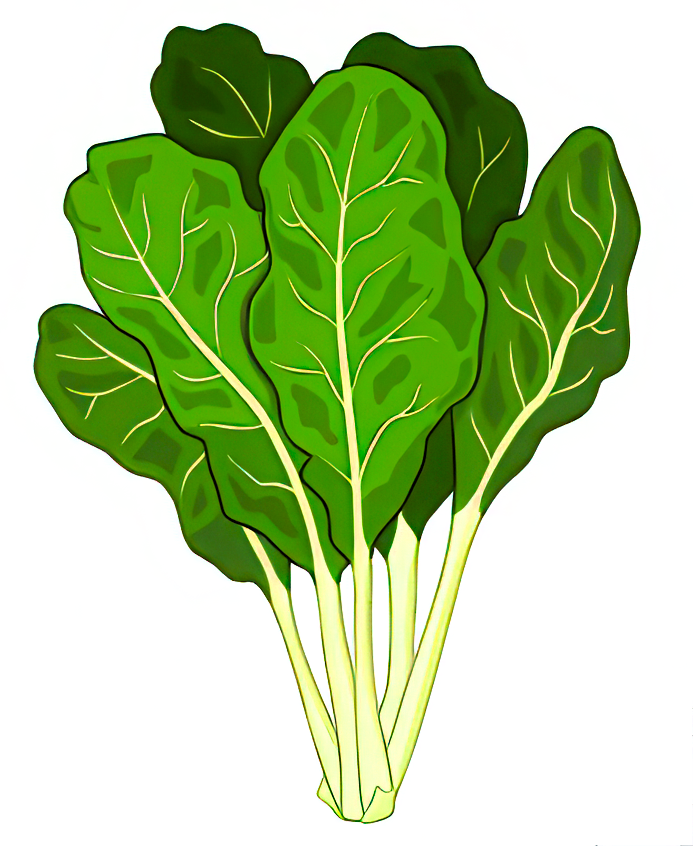
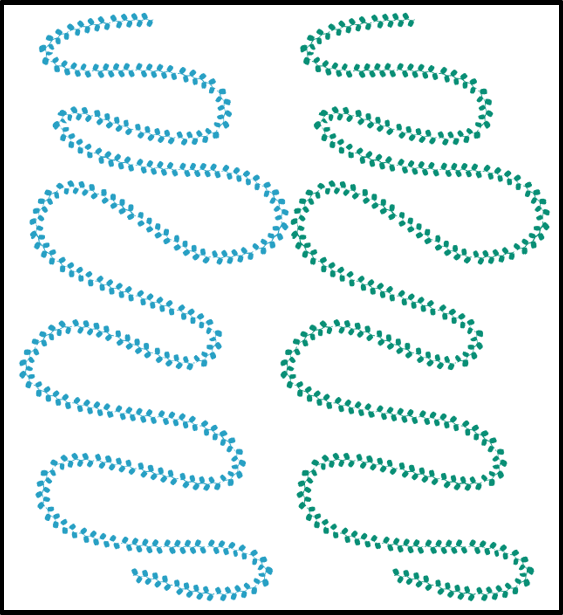

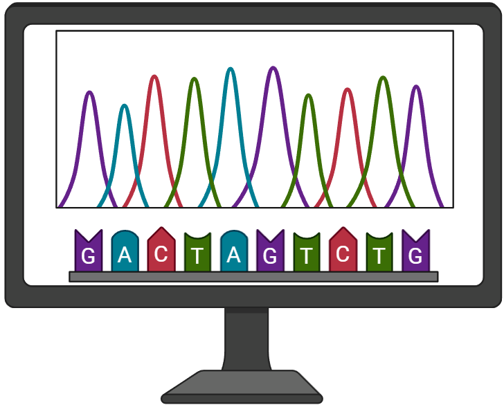
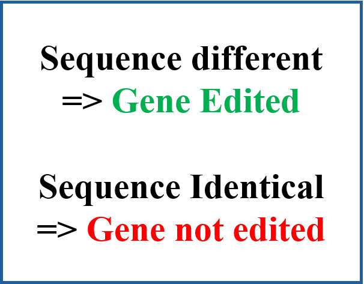
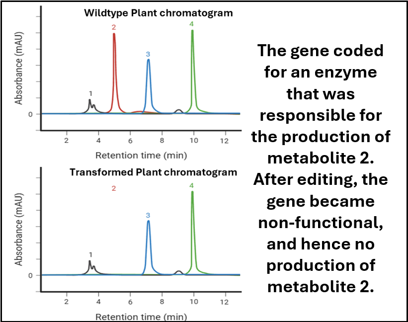